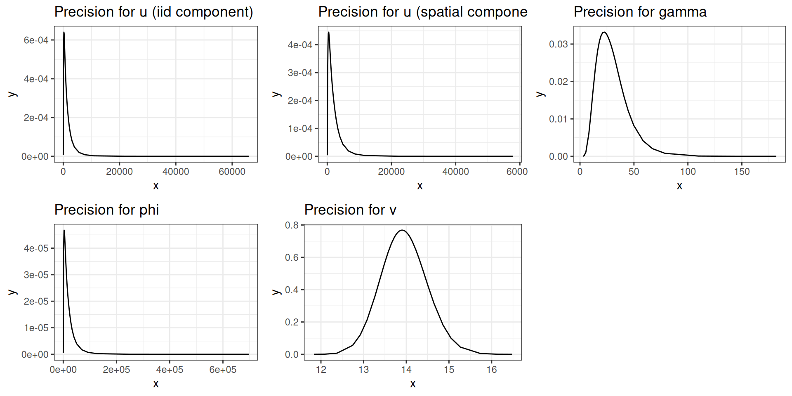
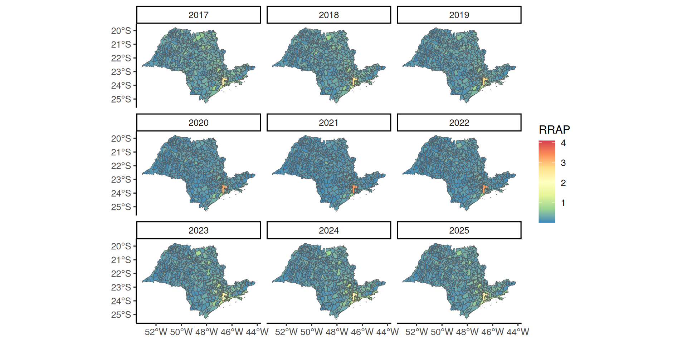

| Inter | DIC |
|---|---|
| I | -95625.38 |
| II | 33603.59 |
| III | 33969.20 |
| IV | 33752.39 |
Relatório Preliminar
Inferência Bayesiana
Caio Gomes Alves
Pedro Francisco Godoy Bernardinelli
Rafael Ribeiro Santos
23, May, 2025
Objetivo
Conjunto de dados
Dados anuais de roubos de celulares no estado de São Paulo disponíveis no site da Secretaria de Segurança Pública do Estado;
Informações georreferenciadas, utilizando sistema de Latitude x Longitude para identificar local do roubo;
8 bases separadas, cada uma referente a um dos anos entre 2017 e 2024.
Objetivo
Estimar a contagem de roubos de celulares para os municípios de São Paulo, para o ano de 2025, utilizando a série histórica como base.
Modelo
SIR
- Uma medida de risco relativo de simples interpretação e aplicabilidade é a Razão de Incidência Padronizada (Standardized Incidence Ratio - SIR), dada por:
\[\begin{equation} SIR_{ij} = \frac{Y_{ij}}{E_{ij}} \end{equation}\]
- Onde \(Y_{ij}\) é a contagem de casos (roubos) e \(E_{ij}\) é a expectativa de casos no município \(i\) no ano \(j\), obtida por padronização indireta.
SIR
O valor de SIR indica se o município \(i\) no ano \(j\) possui risco de roubo menor (\(SIR < 1\)), igual (\(SIR = 1\)) ou maior (\(SIR > 1\)) do que o esperado para a população padronizada;
Essa razão permite avaliar regiões do estado que possuem risco de roubo elevado/reduzido, ao invés da contagem “bruta”.
Especificação do modelo
- O modelo será construído para estimar a contagem de roubos a partir da seguinte relação:
\[\begin{align} Y_{ij} &\sim \mathrm{Pois}(E_{ij}\theta_{ij}) \\ \log(\theta_{ij}) &= \beta + u_{i} + v_{i} + \gamma_{j} + \phi_{j} + \delta_{ij} \end{align}\]
- Onde \(\beta\) é um vetor de parâmetros da regressão, \(u_{i},v_{i}\) são efeitos aleatórios espaciais, \(\gamma_{j},\phi_{j}\) são efeitos aleatórios temporais e \(\delta_{ij}\) é um efeito de interação espaço-temporal.
Especificação do modelo
- Os efeitos espacialmente correlacionados \(u_{i}\) seguem um modelo Condicional Autorregressivo BYM (Besag, York, and Mollié 1991), dado por:
\[\begin{equation} u_{i}|u_{-i} \sim N\left(\bar{u}_{\delta_{i}},\frac{\sigma_{u}^{2}}{n_{\delta_{i}}}\right) \end{equation}\]
- Onde \(\bar{u}_{\delta_{i}} = n_{\delta_{i}}^{-1}\sum_{j \in \delta_{i}}u_{j}\), com \(\delta_{i}\) e \(n_{\delta_{i}}\) representando o conjunto e a quantidade de vizinhos do município \(u_{i}\).
Especificação do modelo
- Os efeitos temporalmente correlacionados \(\gamma_{j}\) seguem um modelo de “Random Walk” de ordem 1, dado por:
\[\begin{equation} \gamma_{j}|\gamma_{j-1} \sim N\left(\gamma_{j-1},\sigma_{\gamma}^{2}\right) \end{equation}\]
- Ordens superiores (RW2 em diante) podem ser especificadas, ou ainda modelos autorregressivos (AR1 e afins).
Especificação do modelo
Os efeitos espaciais e temporais não-correlacionados \(v_{i},\phi_{j}\) seguem distribuição Normal, com médias 0 e variâncias \(\sigma_{v}^{2},\sigma_{\phi}^{2}\);
(Knorr‐Held 2000) propôs 4 tipos de interações espaço-temporais, entre os seguintes efeitos:
- \((v_{i},\phi_{j})\);
- \((v_{i},\gamma_{j})\);
- \((u_{i},\phi_{j})\);
- \((u_{i},\gamma_{j})\).
Especificação do modelo
- O vetor \(\beta\) de parâmetros da regressão considera o intercepto, e duas variáveis que são medidas a nível municipal e fixo ao longo dos anos:
IDHM: Índice de Desenvolvimento Humano Municipal;Escolarização: Taxa (em porcentagem) de escolaridade geral do município.
Prioris
Para a precisão de \(\log(u_{i})\) e \(\log(\gamma_{j})\), considera-se uma priori Log-Gamma;
O hiperparâmetro da Log-Gamma pode ser definido a partir de diferentes heurísticas, mas usualmente considera-se algo próximo de 0.
Prioris
Para a precisão de \(\log(v_{i})\) e \(\log(\phi_{j})\), também considera-se uma priori Log-Gamma;
Para \(\sigma^{2}_{\beta}\) considera-se também uma Log-Gamma, com valor inicial igual a 1.
Metodologia
INLA
Para a modelagem foi utilizada a metodologia proposta por (Rue, Martino, and Chopin 2009), chamada INLA - Integrated Nested Laplace Approximations;
Esse método não se baseia em gerar amostras das distribuições conjuntas, mas aproximar numericamente (de maneira eficiente) as marginais a posteriori.
INLA
Para que o INLA possa ser utilizado são necessários certas condições de regularidade para os modelos (distribuição unimodal, não degenerada nos limites, dentre outras);
Os modelos foram ajustados utilizando o pacote R-INLA, disponível em http://www.r-inla.org/.
Resultados
Modelos
Foram ajustados 4 modelos, considerando as diferentes interações espaço-temporais propostas por (Knorr‐Held 2000);
A comparação foi realizada utilizando o DIC, extraído de cada um dos modelos.
Comparação dos modelos
Efeitos fixos
| mean | sd | mode | |
|---|---|---|---|
| (Intercept) | 0.0879607 | 1.5967380 | 0.0879606 |
| IDHM | 0.1419580 | 2.0037026 | 0.1419579 |
| Escolarizacao | 0.0008289 | 0.0165589 | 0.0008289 |
Distribuição dos efeitos fixos

Distribuição dos efeitos aleatórios
Mapas
Mapa da média do risco relativo à posteriori
Mapa do quantil 0.025 do risco relativo à posteriori
Mapa do quantil 0.975 do risco relativo à posteriori
Risco médio a posteriori para Campinas
Tendência temporal estimada
Mapa animado

Referências
Referências
Referências
Besag, Julian, Jeremy York, and Annie Mollié. 1991. “Bayesian Image Restoration, with Two Applications in Spatial Statistics.” Annals of the Institute of Statistical Mathematics 43 (1): 1–20. https://doi.org/10.1007/BF00116466.
Knorr‐Held, Leonhard. 2000. “Bayesian Modelling of Inseparable Space‐time Variation in Disease Risk.” Statistics in Medicine 19 (17-18): 2555–67. https://doi.org/10.1002/1097-0258(20000915/30)19:17/18<2555::AID-SIM587>3.0.CO;2-#.
Rue, Håvard, Sara Martino, and Nicolas Chopin. 2009. “Approximate Bayesian Inference for Latent Gaussian Models by Using Integrated Nested Laplace Approximations.” Journal of the Royal Statistical Society Series B: Statistical Methodology 71 (2): 319–92. https://doi.org/10.1111/j.1467-9868.2008.00700.x.
Relatório Preliminar